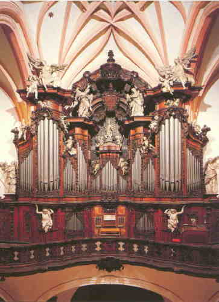
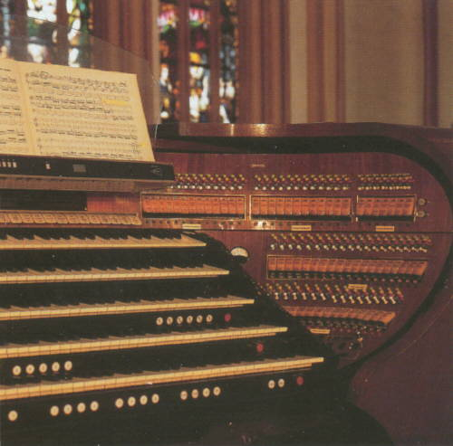
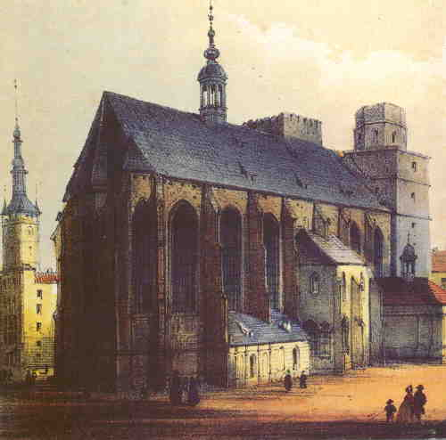
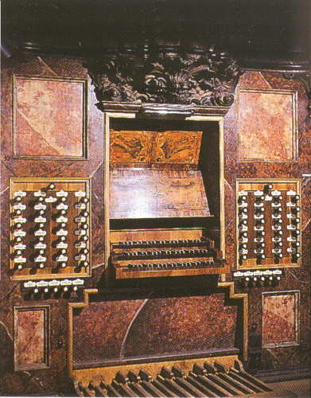
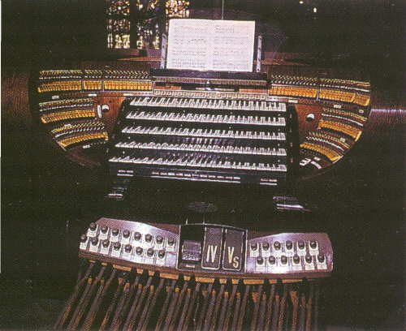
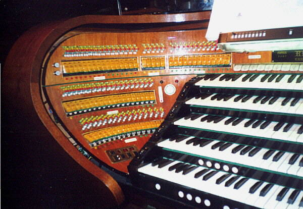
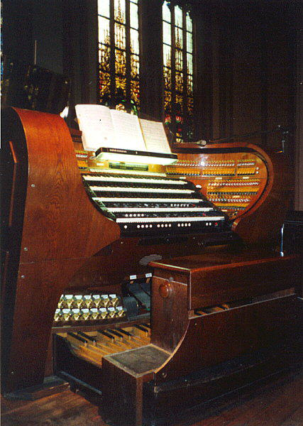
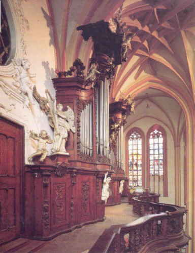

 |
Olomouc, kdysi královské hlavní mìsto Moravy a prominentní vojenská pevnost, byla v minulosti také vyspìlım kulturním centrem. S tím úzce souvisí i vıstavba honosné kamenné architektury zejména církevních staveb. Vedle katedrály sv. Václava byl m.j. jak nábo�enskım, tak i kulturním centrem proboštskı chrám sv. Moøice - nejvìtší gotickı chrám na Moravì. Existence chrámu se poprvé pøipomíná roku 1257. Chrám sv Moøice nìkolikrát vyhoøel a v souvislosti s tím se mìnil i jeho vzhled a vnitøní vybavení. Dnešní architektonická dispozice je z let 1412 - 1480. Poslední po�ár roku 1709 znièil vedle moøického kostela skoro celé vnitøní mìsto. Od té doby je také interiér kostela (a� na presbytáø, obnovenı v roce 1860 v neogotickém slohu) barokní. Dnešní trojlodní kostel je velmi cennım dokladem pozdní gotiky stavìnı podle jihonìmeckého vzoru. Na první pohled zvenèí se jeví jako jednoduchá stavba, uvnitø však jsou klenby s monumentálním rozpìtím. Kdy byly u sv. Moøice postaveny první varhany nelze pøesnì zjistit. Je to pøedevším dùsledek chybìjících písemnıch archivních pramenù, èastıch po�árù a jinıch èasto i váleènıch vlivù. Proto lze také vıvoj moøickıch varhan rekonstruovat jen èásteènì. První záznam o varhaníkovi je z roku 1496. Následují pak další o varhanách i varhanících. Prvním nástrojem, postavenım po velkém po�áru v roce 1709 byl malı pozitiv dnes stojící u oltáøe Bolestné P Marie, kterı zhotovil r. 1716 olomouckı varhanáø Antonín Schack. Pøi obnovì interiéru kostela po posledním po�áru, byla upravena také zadní chrámová prostora. Roku 1730 byl postaven barokní kùr, zdobenı bohatou døevoøezbou na zábradlí a varhanním prospektu. Stavbu inicioval umìnímilovnı probošt František Øehoø Giannini. Pùvodní stavbou novıch varhan byl povìøen olomouckı varhanáø Josef Emanuel Heintzler, kterı však záhy po zapoèetí stavby zemøel a tak byl tento úkol po pøedbì�ném jednání svìøen tehdy slavnému mistru varhanáøi Michaelu Englerovi z Vratislavi (Breslau, Wroczlaw) nar. 1688 a zemø. 1760, kterı je ve varhanáøství oznaèován za zakladatele slezského varhanáøství. Engler upustil od pùvodní koncepce J. Heintzlera a navrhl koncepci novou, podle nìj modernìjší a lepší. Zmìnil také dispozici nástroje, kterı nyní mìl oproti Heintzlerovi bıt tøímanuálovım nástrojem s pedálem a mìl mít 44 znìjících hlasù. Hrací stùl byl souèástí varhanní skøínì a nástroj dìlenı dùslednì na "C" a "Cis" stranu mìl HLAVNÍ STROJ, HORNÍ STROJ, DOLNÍ STROJ a PEDÁI,. Oznaèení pøíslušnosti jednotlivıch rejstøíkù bylo uvedeno pod jejich názvem. Bohatì zdobená varhanní skøíò a zábradlí kùru jsou dílem mistra øezbáøe Filipa Satlera a stolaøe Jana Jiøího Ehrlicha. Stavbu zapoèal v roce 1740 a varhany byly slavnostnì pøedány do u�ívání 21. záøí 1745. Celou akci financoval Giannini sám, obrovskou èástku 19 tisíc zlatıch však nebyl schopen splatit ani do své smrti roku 1758. Od jeho postavení byl moøickı nástroj pro svou mimoøádnou zvukovou i stavební monumentalitu nazıván "Královnou moravskıch varhan". Pøes 249 let slou�í Englerovy varhany veøejnosti a jako jediné pøe�ily i druhou svìtovou válku, zatímco všechny ostatní nástroje M. Englera v poètu 287 byly znièeny Proto tehdejší èeskoslovenská vláda zaøadila r. 1959 tyto varhany mezi nejcennìjší památky svého druhu na našem území a rozhodla, �e celı nástroj bude nejen konzervován a petrifikován, ale také zvìtšen tak, aby na nìm mohla bıt interpretovaná i vysoce nároèná díla,soudobıch skladatelù. Vypracováním plánù celé rekonstrukce ve spolupráci s orgány památkové péèe byl povìøen prof. Antonín Schindler, kterı také mìl nad stavbou odbornı stavební dozor. Vlastní varhanáøské práce provedl náš nejvìtší umìleckı závod RIEGER-KLOSS VARHANY KRNOV v letech 1959 - 1970. Svou velikostí je dnes moøickı nástroj nejvìtším v ÈR a jedním z nejvìtších v Evropì. Pøi zachování samostatné pou�itelnosti hracího stolu barokních varhan je celı rekonstruovanı nástroj zvìtšen a zapojen na novı pìtimanuálovı hrací stùl, zkonstruovanı dle návrhu A. Schindlera. Nástroj má nyní 135 rejstøíkù a 10.400 píš�al a zvukovıch center. Nejvìtší píš�ala mìøí 11,75m, má prùmìr 56cm a vá�í 120kg, nejmenší je dlouhá 5cm a má prùmìr 3mm. Celkové náklady na rekonstrukce dosáhly vıše více ne� tøí miliónù Kès (v cenách z roku 1970), z èeho� stát uhradil 2,5 miliónù a zbytek farní úøad ze sbírek. Varhany se pøednì vyu�ívají k liturgickım úèelùm (je to aktivní kostel), dále zde probíhá ka�dım rokem Mezinárodní varhanní.festival, na kterém vystupují špièkoví varhanní umìlci z celého svìta. Naše i zahranièní spoleènosti zde nahrávají CD a také èeskı film, rozhlas a TV zde pùsobí. Englerovy varhany v kostele sv. Moøice patøí k nejcennìjším umìleckohistorickım památkám Olomouce a jsou pøedmìtem stálého zájmu návštìvníkù mìsta. V roce 2000 prošly varhany a hrací stùl další modernizací (pøedevším elektrická traktura a elektronika hracího stolu - registraèní poèítaè, MIDI interface...).
|
|  | Chrám
sv. Moøice v Olomouci, nejvìtší gotickı chrám na Moravì. |
|  |  |
|
Pùvodní (mechanickı) hrací stùl.
|
Novı (elektrickı) hrací stùl na boku kùru.
|
 Detail levé èásti hracího stolu |
|  | Celkovı
pohled na hrací stùl. |
|  | Celkovı
pohled na kùr. V pozadí novı hrací stùl. |